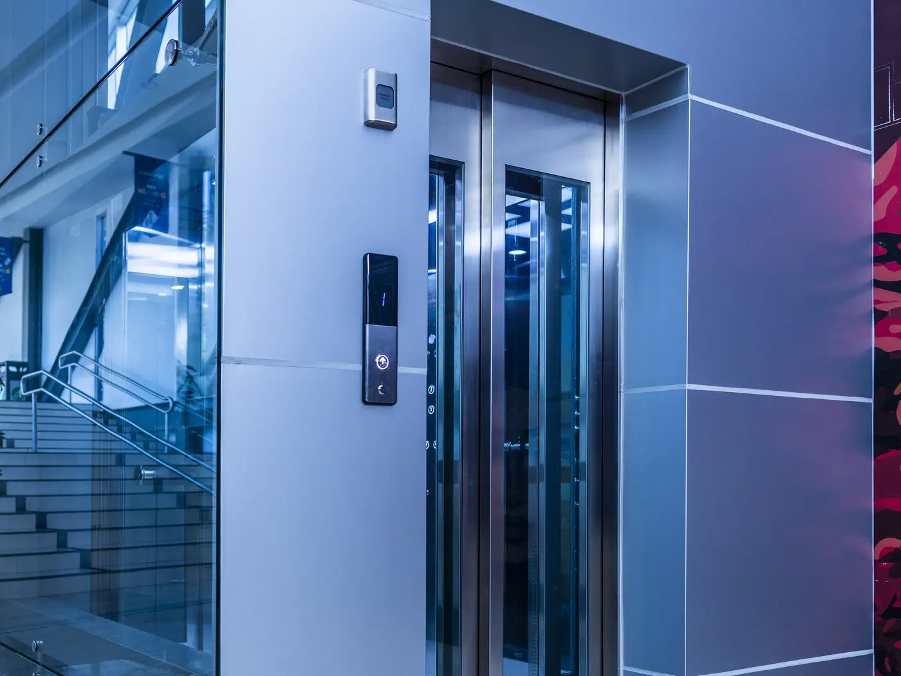
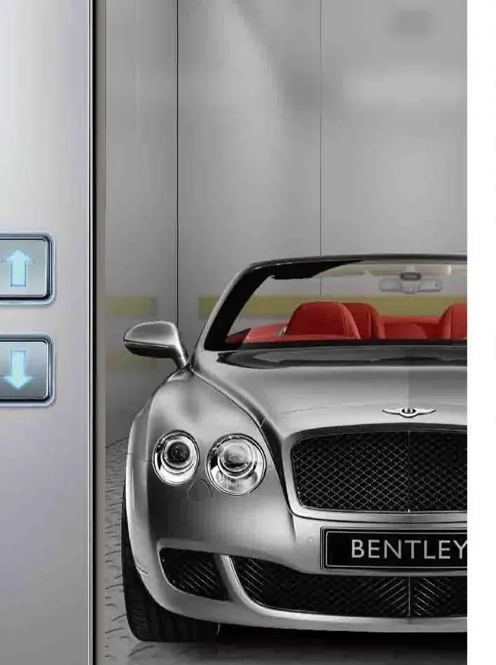
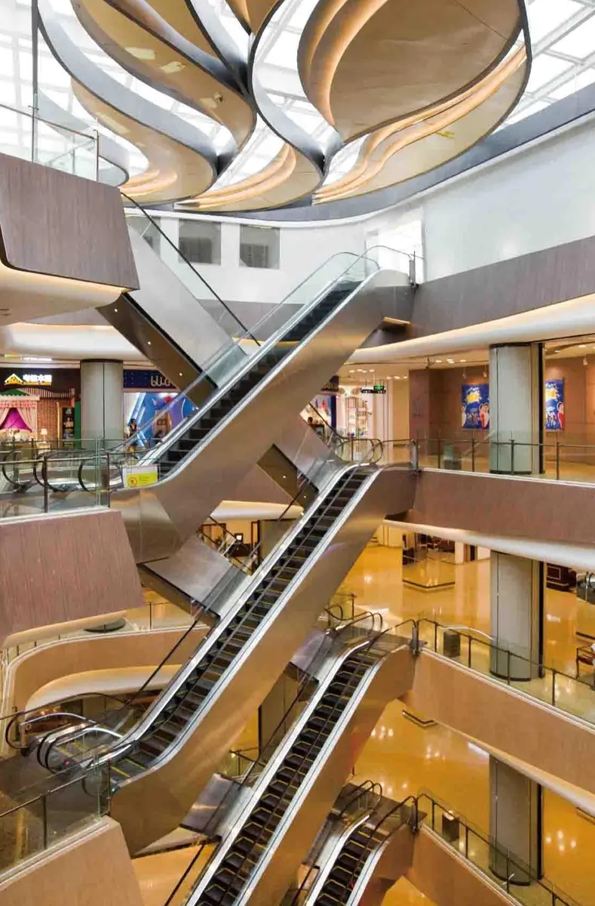

01
Fabricado a la medida
No solamente en dimensiones, sino en diseño. Nos adaptamos al ducto que existe, no al revés. Trece familias de equipo cubren desde una villa de tres paradas hasta un montacargas de 10 000 kg.
FujiLatam
Movemos gente. Tecnología japonesa, producción de alta calidad en China, y equipos fabricados a la medida de cada proyecto.
Por que Fuji
FujiLatam no instala ni da mantenimiento. Fabricamos y exportamos. El proyecto, la instalación y el cliente final quedan con usted.
No solamente en dimensiones, sino en diseño. Nos adaptamos al ducto que existe, no al revés. Trece familias de equipo cubren desde una villa de tres paradas hasta un montacargas de 10 000 kg.
Somos supercompetitivos en el rango en el que competimos. Su margen no depende de bajar el precio, depende de ganar la licitación con un equipo que cumple.
Máquina de tracción sincrónica de imán permanente sin engranes, operador de puertas Panasonic, control de grupo dúplex y tríplex, y tecnología de inversor digital.
A nadie le gusta comprar un equipo y no poder usarlo. Mantenemos stock de componentes en la región y despachamos express cuando el proyecto lo exige.
Encuentre su equipo
Tres preguntas y le decimos qué familias de producto encajan. No es una cotización y no reemplaza un estudio de tráfico, pero le ahorra media hora de catálogo.
Líneas de producto

De pasajeros, residenciales, panorámicos, de camillas, montacargas e hidráulicos. Es la línea con más volumen y la que define el resto del proyecto.
9 familias de equipo
Ver productos
Elevadores de vehículos y sistemas de parqueo mecánico. Es la línea que más crece: cada vez hay menos terreno y todo el mundo busca cómo duplicar su parqueo.
2 familias de equipo
Ver productos
Escaleras eléctricas de 30 y 35 grados y pasillos móviles de 0 y 12 grados, para centros comerciales, aeropuertos y estaciones.
2 familias de equipo
Ver productosPor tipo de construcción
Red de distribuidores
Fuji vende a través de distribuidores. Toque su país y le decimos quién lo representa, o escríbanos si quiere representarnos usted.
Toque un país en el mapa
Escríbanos y vemos si su empresa encaja en la red Fuji de su país.
No. FujiLatam fabrica y exporta. La instalación y el postventa quedan con la empresa instaladora de cada país. Por eso trabajamos a través de distribuidores y no le competimos a nuestros propios clientes.
No. Si una constructora nos contacta, la enviamos al distribuidor de su país. Si en ese país todavía no hay distribuidor, lo atendemos desde fábrica mientras se asigna el territorio.
Porque casi todo se define por licitación en sobre cerrado. Publicar un rango le entrega a la competencia una referencia de por donde va nuestro precio, y además ancla al cliente en una cifra que casi nunca corresponde a su edificio.
El estándar es 1 m/s y en la mayoría de proyectos es suficiente. Un edificio de seis o diez paradas no alcanza a llegar a 2 m/s, y en bajada nunca se llega a la velocidad nominal. Antes de pagar por velocidad conviene revisar apertura de puertas, cierre y rampa de arranque, que es donde de verdad se siente.
No para comprar. Si usted ya tiene una empresa de instalación, tiene su propio método. La capacitación en la fábrica principal en China y la capacitación en sitio son servicios adicionales, y muchos distribuidores los usan para el equipo nuevo.
Le pasamos su contacto al distribuidor que ya representa a Fuji ahi. Si aun así quiere trabajar con nosotros, escríbanos: cada territorio se maneja distinto y lo vemos caso por caso.
De inmediato. En este negocio el correo se contesta el mismo día.
Sí. Fabricamos a la medida en dimensiones y en diseño. Si el ducto ya existe, diseñamos el equipo que entra en ese ducto.